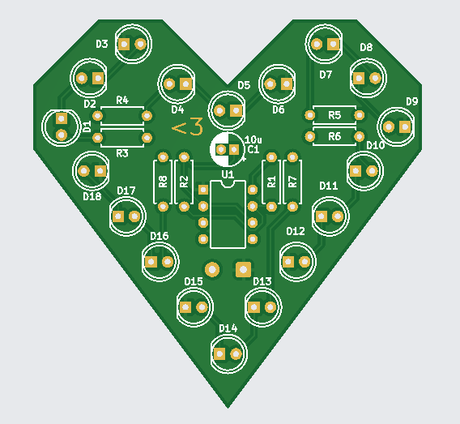

user@sandxwich:~/projects/pcb$
open render
PCB Build Preview — showcase a 3D board render, component layout, and assembly detail.
summary
My first PCB hobby project. Started as a simple present for my girlfriend. But taught me a lot about electronics and design in kicad.
This page is a brief overview of the project's development and skills learned allong the way.
board preview

Live project image showing the current PCB artwork and component placement.
project details
This project was a personal learning experience to get familiar with PCB design and layout using KiCad.
I designed a custom PCB for a Valentine's Day gift, which included basic components like resistors, capacitors, LEDs and a 555 timer.
The project involved creating the schematic, designing the PCB layout, and generating the necessary files for manufacturing.
skills learned
- PCB design and layout using KiCad
- Component selection and placement for a simple circuit
- Generating Gerber files for PCB manufacturing
- Understanding basic electronics principles through hands-on design
details
Role: PCB layout, part placement, and 3D preview styling for hardware presentation.
Tools: KiCad, 3D export, board layering, and component documentation.
Result: a clear hardware story with a dedicated PCB page that highlights the board design and assembly at a glance.